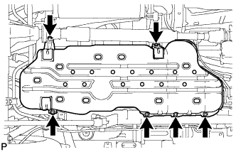
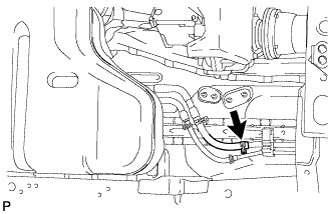
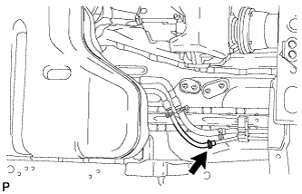
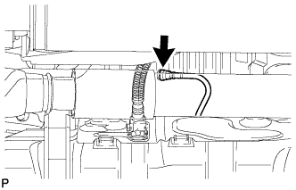

ТОПЛИВНЫЙ БАК > СНЯТИЕ |
| 1. DISCONNECT CABLE FROM NEGATIVE BATTERY TERMINAL |
| 2. REMOVE REAR SEAT ASSEMBLY LH |
for 60/40 Split Double-folding Seat Type LH Side:
Remove the rear seat assembly LH (See page Нажмите здесь).
for 60/40 Split Slide Walk-in Seat Type LH Side:
Remove the rear seat assembly LH (See page Нажмите здесь).
| 3. REMOVE REAR FLOOR SERVICE HOLE COVER |
 |
Remove the 3 screws and rear floor service hole cover.
Disconnect the fuel sender gauge connector.
| *A | for Single Tank Type |
| *B | for Double Tank Type |
| 4. REMOVE NO. 1 FUEL TANK PROTECTOR SUB-ASSEMBLY |
|  |
Remove the 6 bolts and No. 1 fuel tank protector.
| 5. DISCONNECT FUEL TANK MAIN TUBE SUB-ASSEMBLY (for Single Tank Type) |
|  |
| 6. DISCONNECT FUEL RETURN TUBE SUB-ASSEMBLY (for Single Tank Type) |
|  |
| 7. DISCONNECT FUEL TANK MAIN TUBE SUB-ASSEMBLY (for Double Tank Type) |
| 8. DISCONNECT FUEL CUT OFF TUBE (for Single Tank Type) |
|  |
| 9. DISCONNECT FUEL TANK BREATHER TUBE SUB-ASSEMBLY (for Single Tank Type) |
 |
Disconnect the fuel tank breather tube (See page Нажмите здесь).
| 10. DISCONNECT FUEL CUT OFF TUBE (for Double Tank Type) |
Disconnect the fuel cut off tube (See page Нажмите здесь).
| 11. DISCONNECT FUEL RETURN TUBE SUB-ASSEMBLY (for Double Tank Type) |
 |
Disconnect the fuel return tube (See page Нажмите здесь).
| 12. DISCONNECT FUEL TANK BREATHER TUBE SUB-ASSEMBLY (for Double Tank Type) |
Disconnect the fuel tank breather tube (See page Нажмите здесь).
| 13. DISCONNECT FUEL TANK TO FILLER PIPE HOSE |
 |
Disconnect the fuel tank to filler pipe hose from the filler pipe.
| 14. REMOVE FUEL TANK SUB-ASSEMBLY |
Place a transmission jack under the fuel tank.
 |
Remove the 2 bolts, 2 clips, 2 pins and 2 fuel tank bands.
Slowly lower the transmission jack slightly.
| 15. REMOVE FUEL TANK CUSHION |
 |
Remove the No. 1, No. 2 and No. 3 fuel tank cushions from the fuel tank.
| *1 | No. 1 Fuel Tank Cushion |
| *2 | No. 2 Fuel Tank Cushion |
| *3 | No. 3 Fuel Tank Cushion |
| 16. REMOVE FUEL TANK MAIN TUBE SUB-ASSEMBLY AND FUEL RETURN TUBE SUB-ASSEMBLY (for Single Tank Type) |
 |
Remove the 2 fuel tube joint clips and pull out the fuel tank main tube and fuel return tube.
| *1 | Fuel Tube |
| *2 | Fuel Tube Joint |
| *3 | Fuel Tube Joint Clip |
| *4 | O-Ring |
 |
Remove the fuel tank main tube and fuel return tube from the fuel tank.
| 17. REMOVE FUEL TANK MAIN TUBE SUB-ASSEMBLY AND FUEL RETURN TUBE SUB-ASSEMBLY (for Double Tank Type) |
Remove the 2 fuel tube joint clips and pull out the fuel tank main tube and fuel return tube.
| *1 | Fuel Tube |
| *2 | Fuel Tube Joint |
| *3 | Fuel Tube Joint Clip |
| *4 | O-Ring |
Detach the clamp and remove the fuel return tube.
Remove the fuel tank main tube from the fuel tank.
| 18. REMOVE FUEL TANK VENT TUBE ASSEMBLY |
 |
Set SST on the retainer.
 |
Using SST, loosen the retainer.
 | Turn |
Remove the retainer.
Remove the fuel tank vent tube assembly from the fuel tank.
Remove the gasket from the fuel tank.
| 19. REMOVE NO. 3 FUEL TANK PROTECTOR |
 |
Remove the 2 bolts.
Detach the 4 clamps and remove the No. 3 fuel tank protector.
| 20. REMOVE FUEL TANK TO FILLER PIPE HOSE |
 |
Remove the fuel tank to filler pipe hose from the fuel tank.